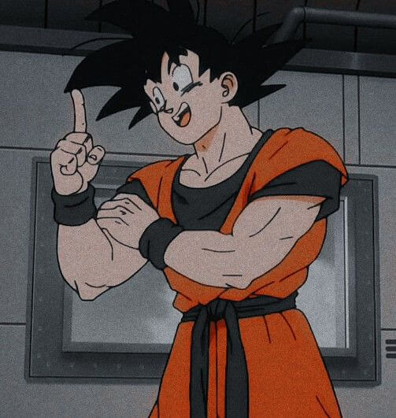
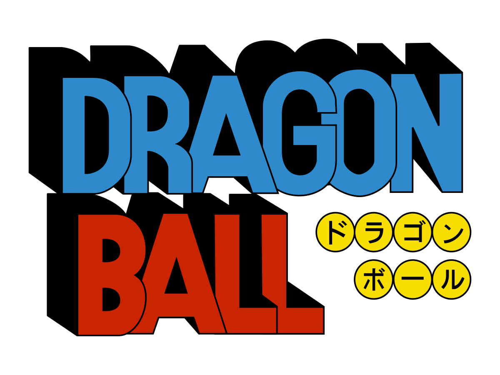
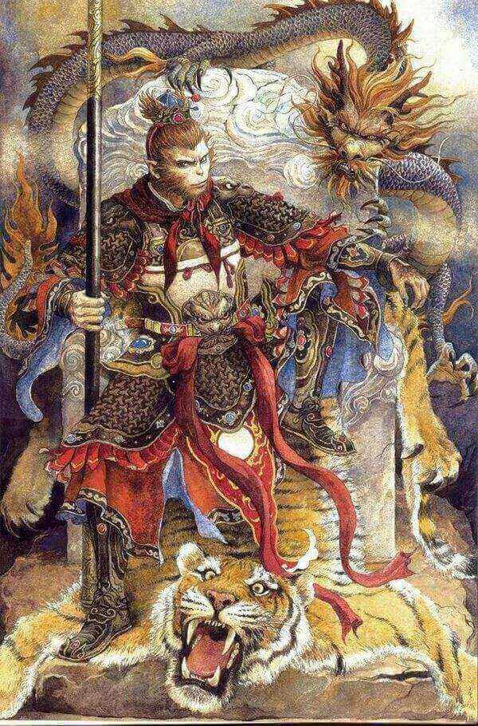

Para alegria dos fãs, depois de uma década, o mangá e anime mais famoso do mundo, Dragon Ball, volta às bancas
de revista em Mangá e a ser exibido na TV japonesa em 2015.
Dragon Ball Super é a continuação da saga Dragon Ball Z, que foi exibida durante os anos de 1989 e 1996.
Em comemoração, iremos apresentar a verdadeira história do Dragon Ball, o anime/mangá mais popular do mundo,
que fez parte da infância e juventude de muita gente.
O que é Dragon Ball ?

Dragon Ball é uma série de mangá escrita por Akira Toriyama, publicada pela Shonnen Jump entre os anos de 1984
a 1995. O mangá foi adaptado em duas séries de anime e recebido com muito sucesso em todo o mundo. Além das
duas adaptações, um terceiro anime também foi produzido, porém sem a participação do criador original, Akira
Toriyama.
A primeira série do anime denominada como Dragon Ball, conta a infância de Goku (protagonista), já a segunda
série, Dragon Ball Z se passa na fase adulta de Goku com seus filho Gohan, Goten e afins.
A terceira saga, Dragon Ball GT que não se baseia no roteiro original, conta a história de Goku que volta a
ser criança novamente, depois de alguns anos da saga Z.
Todas as sagas tem um objetivo principal: Buscar as Esferas do Dragão com muito sacrifício e pancadaria, para
poderem invocar o poderoso Shen Long e fazer o pedido para realização de desejos.
Como já informado, em 2015 o mangá e o anime de maior popularidade no mundo ganha uma continuação direta, com
o roteiro de Akira Toriyama.
Além do sucesso no mangá e anime, a série Dragon Ball já se aventurou e se deu muito bem no mundo dos games e
cinematográfico, com vários jogos e filmes lançados no decorrer dos anos.
Os significados das siglas em Dragon Ball

Dragon Ball significa esferas do dragão. Já a terminação Z da segunda saga associa-se com o fim e término da
série, por ser a última letra do alfabeto, pois de acordo com próprio criador Akira Toriyama, a intenção
inicial era fechar a série em Dragon Ball Z, com Gohan como protagonista.
Como já mencionado, a série GT não foi originalmente escrita por Toriyama, entretanto as letras finais do nome
da série também possui um significado. GT é uma sigla para Great Tour, que significa, Grande Viagem. No anime
GT, é exatamente o que acontece, uma grande viagem pela galáxia em busca das esferas do dragão, para poder
transformar Goku na forma adulta novamente.
Em 2009 foi lançado em anime, Dragon Ball Kai. A palavra Kai significa resumo, ou seja, Dragon Ball Kai é um
anime remasterizado e resumido de Dragon Ball Z.
Por fim, a nova saga Super, está relacionado à nova transformação dos Super Sayajins.
A origem de Dragon Ball

A saga Dragon Ball foi inspirado na Mitologia Chinesa, conhecido como "A Jornada ao Oeste". Um romance com
elementos mitológicos escrito pelo chinês Wu Chengen, em meados de 1570, na Dinastia Ming.
Essa história conta a peregrinação do monge Xuanzang para a Índia, em busca de escrituras sagradas do budismo,
com elementos da lenda chinesa de Sun Wukong (Rei Macaco).
Na história, Sun Wukong é descrito pelo escritor como uma figura lendária com poderes extraordinários. Sun
Wukong acompanha e protege a jornada do monge Tang Xuanzang para o oeste em busca das escritas sagradas do
Budismo.
Ou seja, Sun Wukong, o Rei Macaco é a inspiração do protagonista Goku da série de mangá e anime Dragon Ball.
Essa é a explicação para os Sayjins terem rabos e se transformarem em macacos gigantes em noites de lua cheia.
Um filme bem interessante que lembra a história original do Dragon Ball é o Reino Proibido, estrelados
pelos grandes atores Jackie Chan e Jet Li.